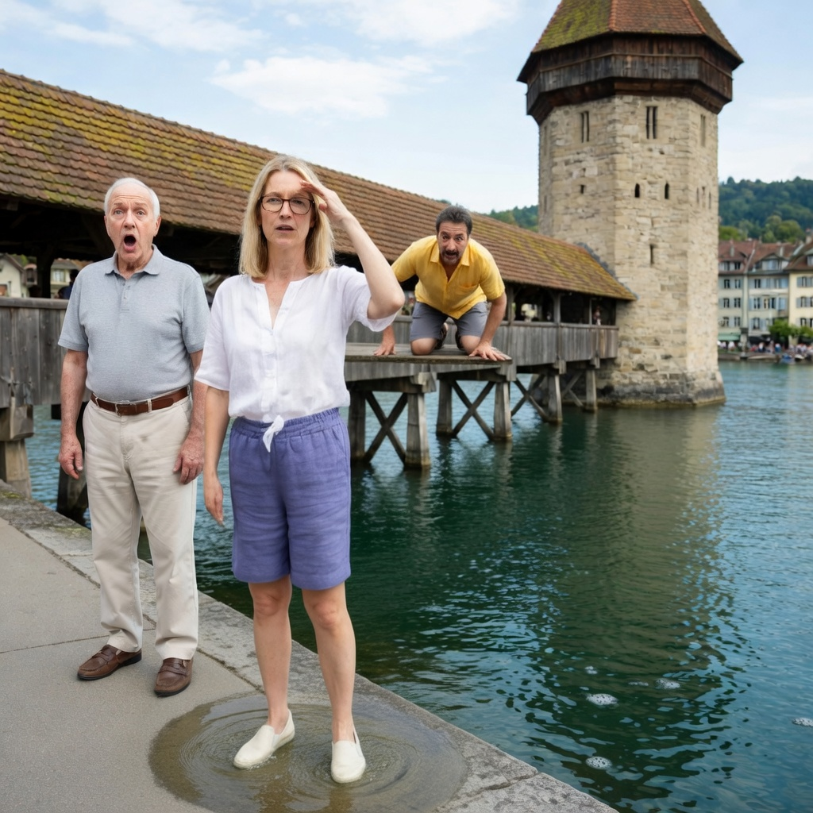
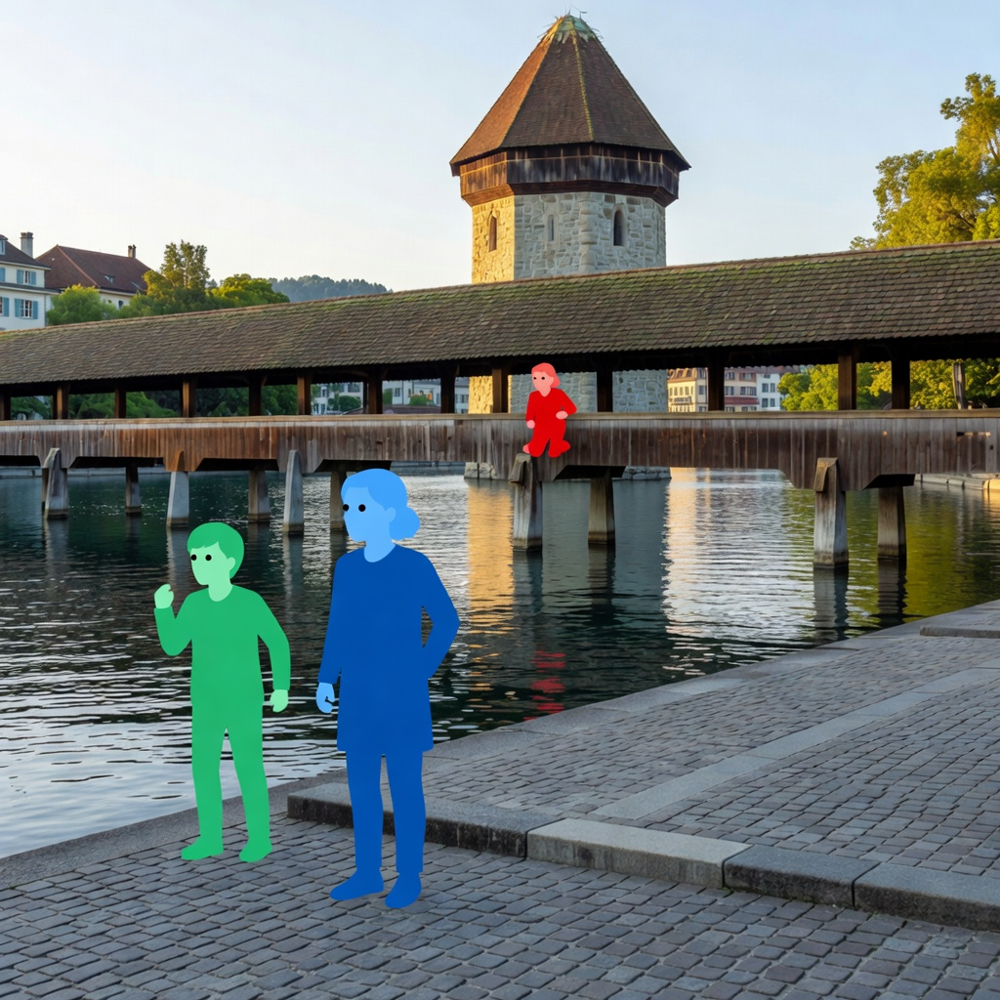
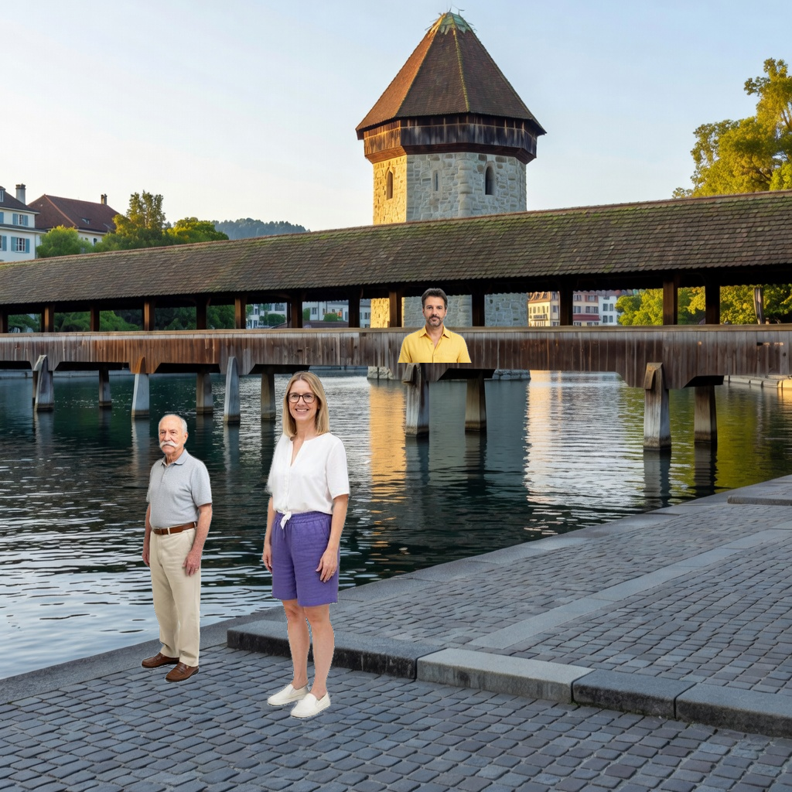
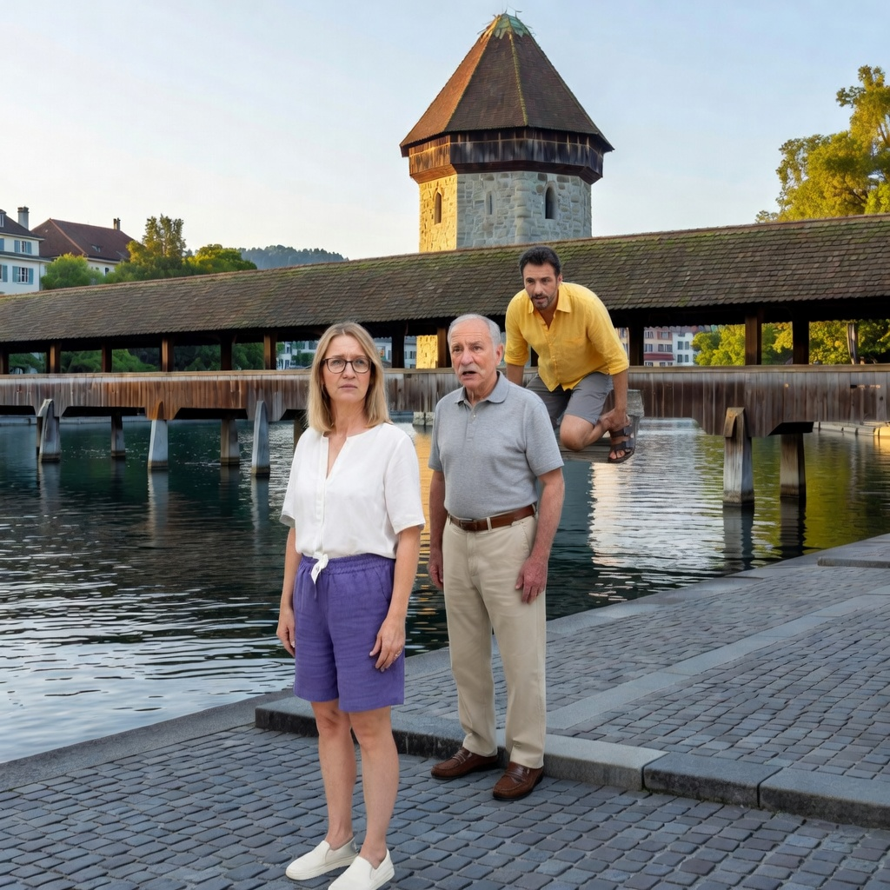
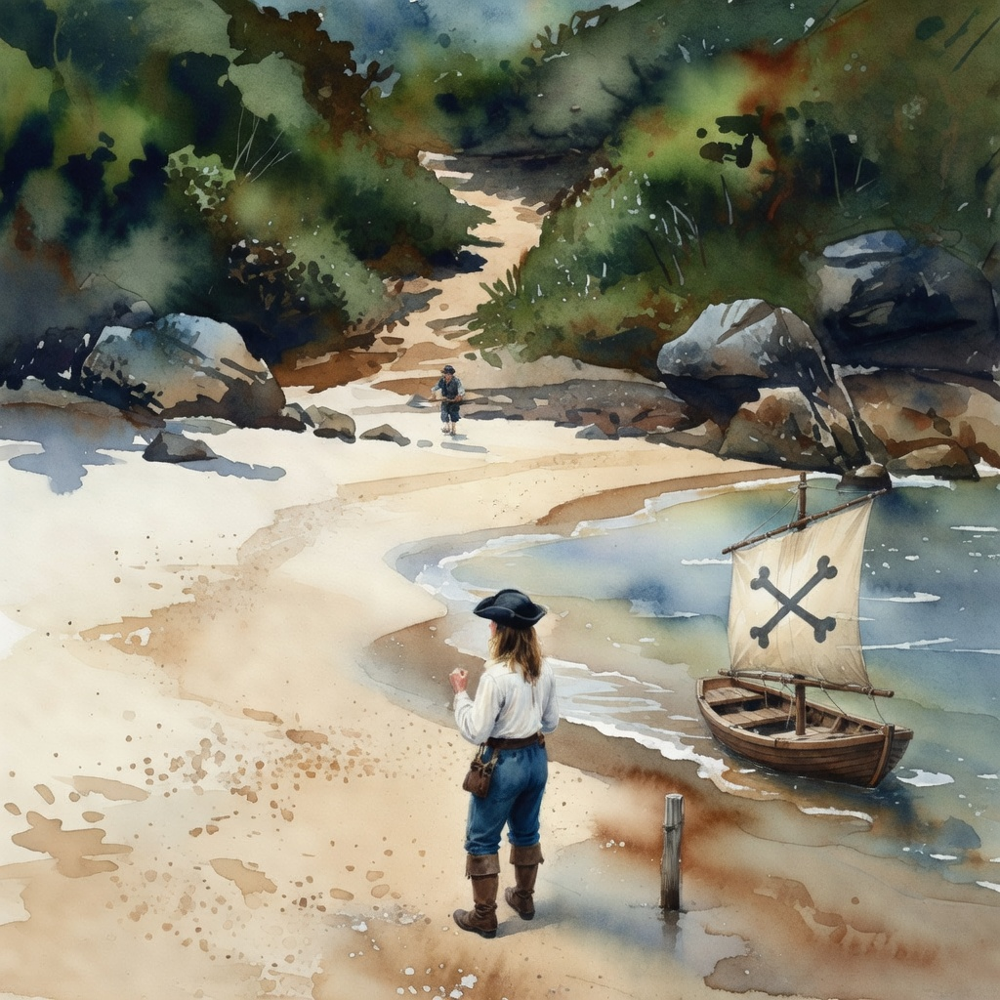
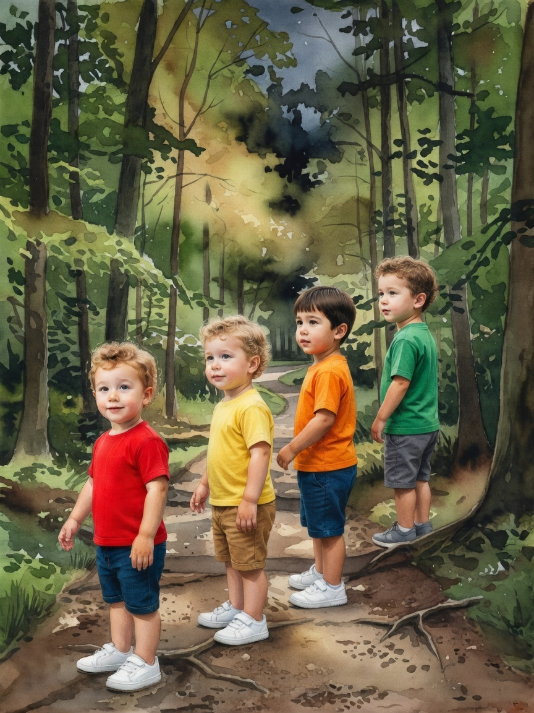

Every page put through the composite
Six pages across four Lab experiments. Two produced a finished composite; four were refused. Where frames exist they run left to right in pipeline order.
2 composited, 4 refused. Both composites are worse than the page that shipped — one because the plate staged a flat lineup, the other because the blend undid the depth the paste had got right. Three of the four refusals are the depth gate correctly saying the declared foreground/background split is not real.
Das Ei im Wurzelnest — page 17
COMPOSITEDThe dragon page. Levin, Max, Kiaan foreground + Julian background. Creature ANI001 Drachenmutter.


The creature fix works; the staging does not. The plate ignored “watching the dragon” and dropped a required object. The blend then did nothing structural — only weather.
Kapellbrücke — page 6
COMPOSITEDThe healthiest case in the set: 2.77× depth spread. Daniel background on the bridge, Sarah foreground, Hans midground.




This is the page that found the bug. The census told the occluded figure to stand “at full height — never shrunk to a small figure”, while the same prompt said he was “in the background — small and distant”. Fixed in
3ad9e1a12; the verification rerun has been killed twice by staging deploys.Kapitänin Fiona — page 14
REFUSED at 1.43×The VB-character page. Cast built: Fiona, Sarah, Facundo, Lorena + Rossa from her Visual Bible sheet.


Both fixes visible in one frame. The VB-character fix took it from “cast is empty” to a five-figure plate; save-on-abort kept that plate when the depth gate refused at 1.43×. The refusal itself is correct.
Kapitänin Fiona — page 1
REFUSED at 1.56×Fiona foreground, Facundo background (“lower center background”).

Depth was declared, but the plate painted both figures at nearly the same size.
Kapitänin Fiona — page 10
REFUSED — cast emptyFiona foreground, “Rossa crew member” background.

Still unfixed, deliberately. CHR002 has
referenceImageUrl: null and an empty appearsInPages — no avatar and no VB sheet. The page falls through to the direct render rather than silently dropping a declared figure. Your call on what should happen here.Das Ei im Wurzelnest — page 1
REFUSED at 1.51×Foreground + background declared.

Same pattern as Fiona p1: the outline declares a depth the plate does not paint.